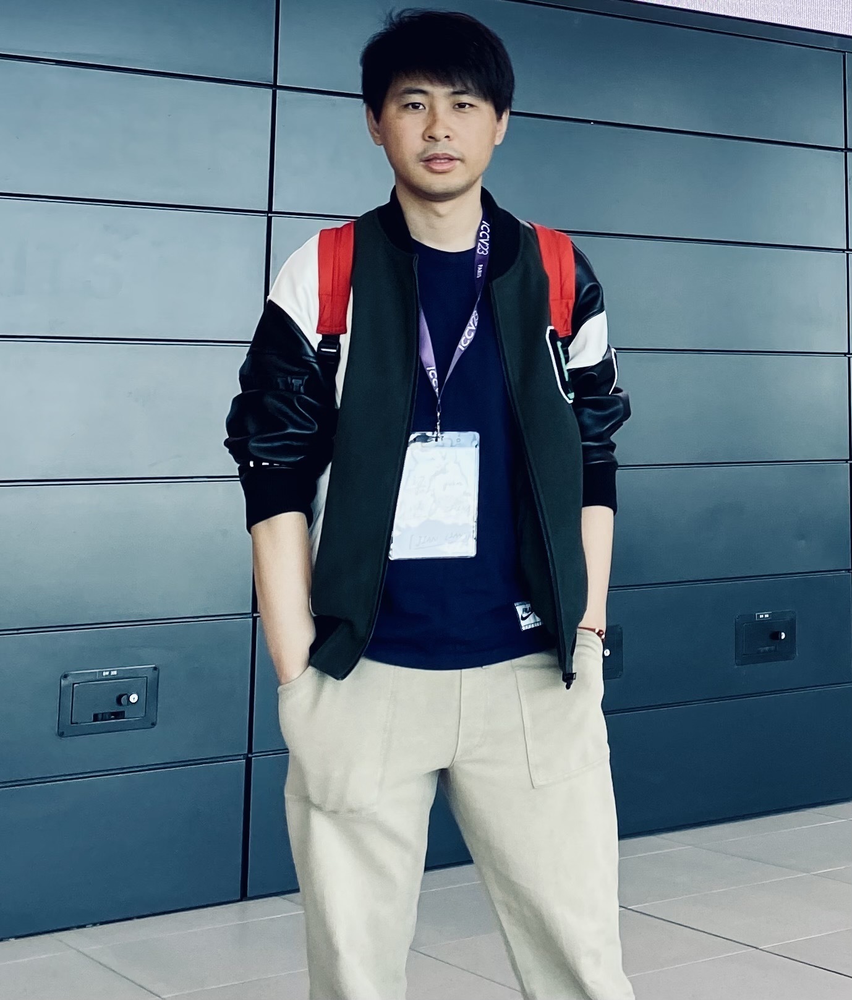

About Me
梁坚 (Jian Liang, Tim) Before joining CASIA in June 2021, I was a research fellow at the Vision and Learning Group, National University of Singapore, working with Dr. Jiashi Feng from June 2019 to April 2021. I obtained Ph.D. in Pattern Recognition and Intelligent Systems from CASIA in Jan 2019, under the supervision of Prof. Tieniu Tan and co-supervision of Prof. Ran He and Prof. Zhenan Sun, and received my bachelor degree in Automation from Xi'an Jiaotong University in June 2013. My current research interests mainly focus on representation learning, knowledge transfer, trustworthy AI (including security, privacy, or robustness in AI), and their applications in various computer vision problems. I am open to discussion or collaboration. Feel free to drop me an email if you're interested. News (the past year)
Recent Work
A Comprehensive Survey on Trustworthiness in Reasoning with Large Language Models
Abstract: Technical report, 2025 Paper / Taxonomy / Code
Adapting Vision-Language Models Without Labels: A Comprehensive Survey
Abstract: Arxiv technical report, 2025 Paper / Link / Code
LoRA-Pro: Are Low-Rank Adapters Properly Optimized?
International Conference on Learning Representations (ICLR), Spotlight, 2025 Paper / Link / Code
The Illusion of Progress? A Critical Look at Test-Time Adaptation for Vision-Language Models
NeurIPS Datasets and Benchmarks Track, 2025 Paper / Link / Code
R-TPT: Improving Adversarial Robustness of Vision-Language Models through Test-Time Prompt Tuning
IEEE/CVF Conference on Computer Vision and Pattern Recognition (CVPR), 2025 Paper / Link / Code
Test-Time Immunization: A Universal Defense Framework Against Jailbreaks for (Multimodal) Large Language Models
Arxiv technical report, 2025 Paper / Link
Do We Really Need Curated Malicious Data for Safety Alignment in Multi-modal Large Language Models?
IEEE/CVF Conference on Computer Vision and Pattern Recognition (CVPR), 2025 Paper / Link / Code
Cooperative Pseudo Labeling for Unsupervised Federated Classification
International Conference on Computer Vision (ICCV), 2025 Paper / Link / Code
Exploring Vacant Classes in Label-Skewed Federated Learning
AAAI Conference on Artificial Intelligence (AAAI), 2025 Paper / Link / Code
Ranking Vision-Language Models in Fully Unlabeled Tasks
Abstract: IEEE Transactions on Multimedia (TMM), 2025 Paper / Link
Out-of-Distribution Detection: A Task-Oriented Survey of Recent Advances
ACM Computing Surveys (CSUR), 2025 Paper / Link / Code
Uni-Layout: Integrating Human Feedback in Unified Layout Generation and Evaluation
ACM International Conference on Multimedia (ACM MM), 2025 Paper / Link / Code |
{kind=link}